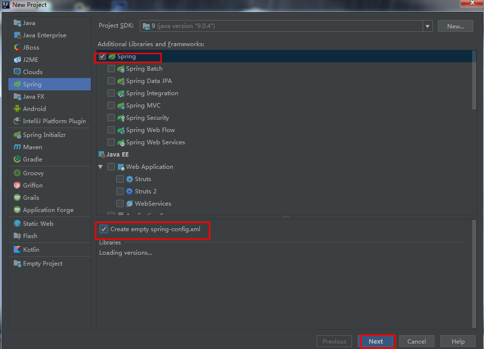
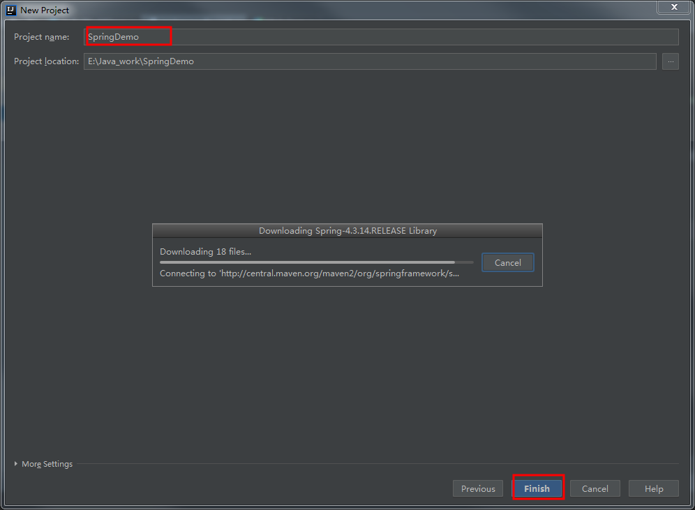
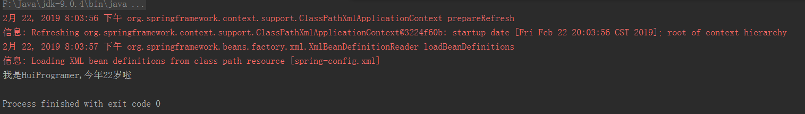

创建Spring项目
我们在idea中创建一个Spring项目，具体如下：
勾选Spring

选择好后点击Next
选择项目路径以及项目名（自动下载所需jar包）

简单的IOC（反转控制）
我们在src目录下新建com.Test包，并创建一个HelloWorld类，实现一个简单的自我介绍功能，代码如下：
1 | package com.Test; |
Bean的配置
接下来我们配置Spring-config.xml文件
1 |
|
注意：这里使用的是属性注入，通过getxx(),setxx()方法。
解析：name为setxx()方法的xx，value为setxx()方法里面的行参。
运行效果
这里我们再新建一个类Main来运行看效果：
1 | package com.Test; |
运行后的结果：
